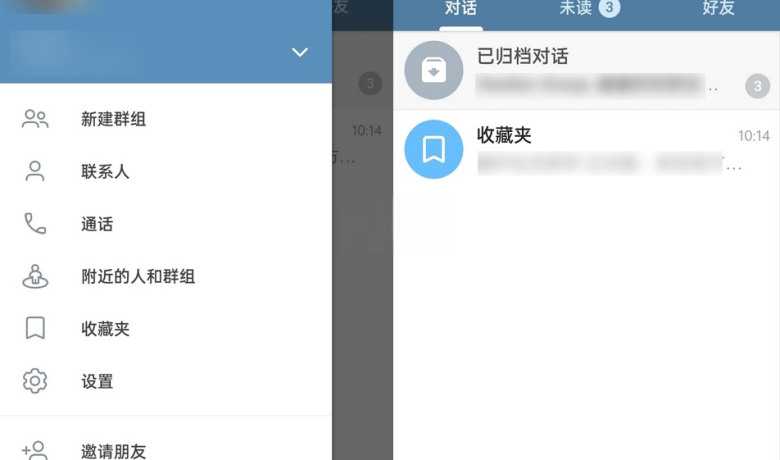
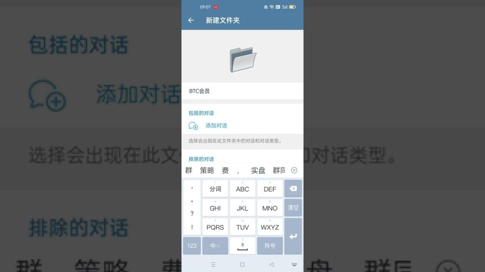

在电报中收藏信息，可以通过将消息转发到“收藏”聊天进行保存。打开想收藏的消息，长按或右击消息，选择“转发”，然后选择“收藏”对话框。你还可以创建一个“收藏”专用的私密聊天，这样更便于整理和管理收藏的信息。


如果Telegram账号被盗，首先应立即尝试通过“忘记密码”功能重置密码，确保账号安全。其次，启用两步验证以加 […]
在Telegram中查看缓存，可以通过进入“设置” -> “数据与存储” -> “存储使用”选项。 […]
在Telegram中设置机器人，首先搜索并添加@BotFather，然后发送 /newbot 创建新机器人。按 […]
在Telegram中找人，你可以通过以下方式：使用“搜索”功能：在主界面顶部的搜索栏中输入用户名、手机号或关键 […]